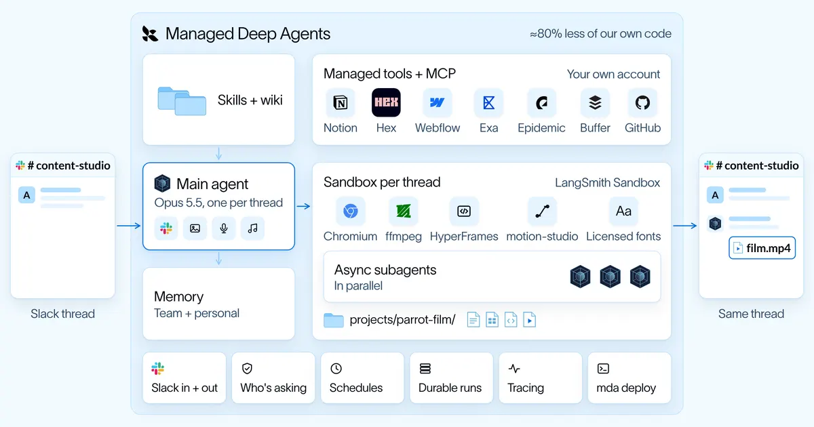
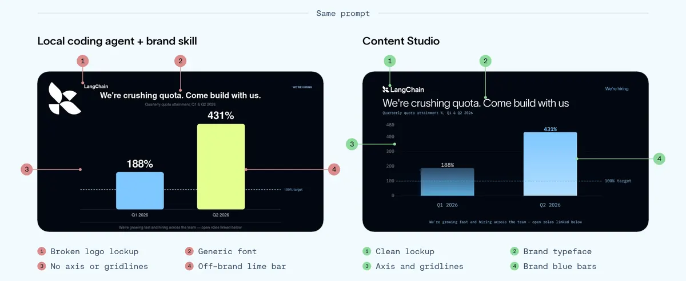

把設計品味教給 agent：規則會過期，環境留下來
導讀原文：LangChain 官方部落格〈How We Built Our Design Agent〉——自家案例工程文；開頭宣傳片由 Content Studio 自製，全片以碼生成，harness 已開源
Content Studio 用四個月學會 LangChain 的設計品味：skills 管方法、wiki 管語境、閘門管可測項、記憶管教訓；模型升級時，補弱規則跟著過期（成效自報）。

品味從 context 來：同一個 prompt，兩種結果
模型早會寫好碼，缺的是你家的脈絡——沒有就抓最常見的樣式（Anthropic 稱 distributional convergence），成品可以精緻卻像別人家做的。
他們引 Stripe 設計長 Katie Dill 的警告：二戰後建築複製現代主義外觀、丟了背後思考——她叫它「zombie UI」，「如果你不給觀點，AI 會替你給。」

差距不在模型，在填空：brief 沒講的每個決定，本地 agent 用「見過最多的」補，Content Studio 用他們的選擇補——logo 組合、文字對齊、主／次品牌色都算。
配方是三層加料：設計原則（一幀一焦點）、擋常見 AI 樣式的欄杆、與每則回饋背後的理由——疊在顏色、字重、間距等基礎 token 之上。
品味可練：早期一條光尾要「不要銳利邊緣」，第一版回了粗鈍圓角；後來 agent 自己畫草圖定位、建逐幀檢查確保尾巴不脫落。
效果面（自報）：帶它作品的貼文在 X 約 450 萬次觀看；用其視覺的貼文按讚約 2 倍、書籤 3.7 倍（LangChain 帳號內對比）；75% 的使用者每週回訪。
角色也變了：PM、工程師、創辦人都能在 Slack 下 brief 拿到可上架的成品；設計師移向創意總監——定方向、審作品，不再每件自己做。
給設計師的電腦：一切皆碼，兩顆引擎
每個 Slack thread 配一台 LangSmith Sandbox（隔離 Linux、帶檔案系統與 shell），專案活在 thread 存續期；brief、計畫、場景碼、音訊與 renders 同住一個資料夾，各子代理共用。
一切用碼寫：投影片是 HTML、圖表是資料 spec、動畫是 timeline——「讓鸚鵡早點進場」只需改一個時間值重渲染，不必整包重做。
動作層兩顆引擎：HyperFrames（HeyGen 開源框架）把影片變網頁、GSAP timeline 排程；自家 motion-studio 畫原創動畫——agent 寫碼畫每一幀，多達 16 個瞬間疊進一幀模擬快門殘影。
動畫貴在 render：單幀分鏡約 50 毫秒，成片一秒要 8–40 秒——所以先在分鏡層便宜探索，定向後才量產。
管線三關：分鏡、animatic（對音訊的粗剪）、製作。順序曾只寫在指示裡、agent 偶爾偷跳審查；現在由程式強制——必守的順序住碼裡，判斷留在 prompt。
回饋介面也補了：Slack thread 是線性文字、分鏡是空間的，改一個字都得重發 prompt。團隊改用 Paper 設計畫布——人在特定幀留言、並排比方向，agent 讀留言接著迭代。
工程細節：Paper 的 agent 工具只在桌面版跑，他們以無頭模式跑在常駐 Linux worker、虛擬顯示加認證橋接雲端沙盒——一次設定全隊共用。
四層知識，與會過期的規則
| 層 | 管什麼 | 例子與數字 |
|---|---|---|
| Skills | 怎麼做這份工作 | 以「工作」而非主題為範圍；router skill 一張表把需求分派到專門 skill，並決定要不要開共畫布 |
| Wiki | 背景與何謂好 | 品牌 token、語彙、產品資訊；動態 wiki 收錄 70 部參考影片拆解 |
| Gates | 可測項 | 程式碼寫成的確定性檢查；預設大小寫這類問題已全自動抓 |
| Memory | 人教的教訓 | 快慢兩迴圈，分團隊層與個人層（見下） |
→ 可橫向滑動
第一版替模型做設計：115 個可重用 UI 元件守得住品牌，但每幀重複同款版式；Opus 5.5 上線後刪掉多數硬碼規則、只留原則與高層指引——更有變化、重複更少。
這是他們自己的 Bitter Lesson：「為補模型弱點而設的規則，會隨模型進步愈來愈不管用；留下的是環境」——工具、context、與人引導工作的方式。
長工單靠非同步子代理：主 agent 從實作者變幕僚長——start_task 派工、check_tasks 查進度、schedule_wakeup 定時喚醒續跑。launch-film skill 內附真實案例——88 秒發布片逐鏡頭重建，agent 從中學會切鏡時機與並行前凍結共用碼。
一夜重製 52 頁簡報：主 agent 跑約 1 小時、子代理合計 6 小時以上，全程不擋對話，任何人都能中途插話改方向。
記憶快慢兩迴圈：快迴圈當場存回饋——AGENTS.md 限 200 行索引，早年曾膨到 50 萬 token；慢迴圈每案抓最多 5 條有證據的教訓，每週彙整進 skills 與 wiki。
（編輯觀點：把「必守順序寫進程式碼、判斷留 prompt」講得最白；48 個 skills 對小團隊是重資產，複製前先問自己有沒有那麼多「工作」要分。）
帶走三件事
品味是 context。brief 沒講的，agent 拿你教過的補。
可測的進閘門。必守的交給程式碼，判斷留在 prompt。
為模型弱點寫的規則會過期。環境才是資產。
同一主題的其他館藏
導讀為本站編輯內容（AI 摘解自原文與館藏重點，非官方文件）；引述語句出自原文，圖解與小標為編輯整理。成效數字（資產數、views、倍率、成本、程式碼量）皆為 LangChain 自家案例自報，無第三方驗證。內容經對照原文的獨立事實審查後發布。